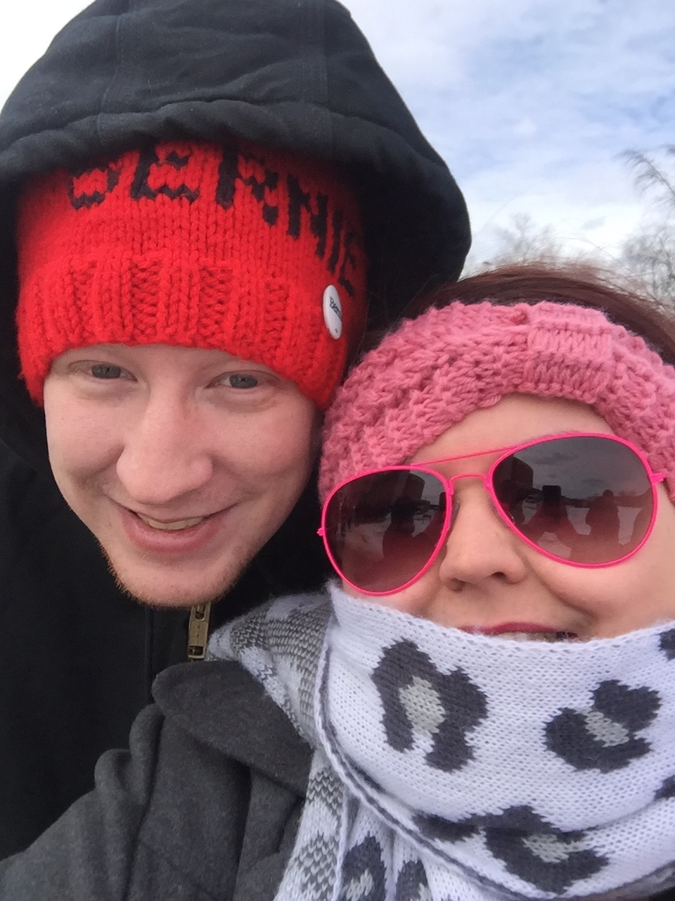

Hello, My name is Mark. I grew up in Michigan pretty much all of my life. I was working at General Motors, driving a forklift, until recently.
I got married .
I had never wanted to work in the shop, but the money was nice, and I had a family to support.
Growing up I had wanted to become a doctor, until i got into high school and took a programming class, and absolutely loved it!
I never knew how to get into the world of programming until my sister-in-law Jenny went to the G-school in boulder 2 years ago.
Shortly after she left Michigan, I decided I would do the same once I saved up enough money.
On , that time finally came and I made the long journey here to Colorado.